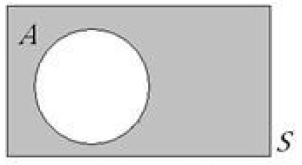
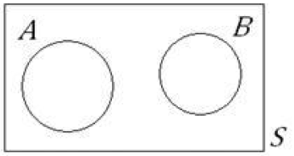

Chapter 2 EST01 - Introdução
All chapters start with a first-level heading followed by your chapter title, like the line above. There should be only one first-level heading (#) per .Rmd file.
2.1 Objetivos
Apresentar os conceitos básicos e o objetivo da estatística.
Estudar as definições associadas ao estudo de probabilidade.
2.2 Definições
2.2.1 Probabilidade
A palavra probabilidade deriva do Latim probare (provar ou testar).
Informalmente, outras palavras são utilizadas para eventos incertos ou conhecidos, como provável, sorte, risco, azar, incerteza, dependendo do contexto.
A probabilidade é um número que varia de 0 (zero) a 1 (um) e que mede a chance de ocorrência de um determinado resultado.
Quanto mais próxima de zero for a probabilidade, menores são as chances de ocorrer o resultado e quanto mais próxima de um for a probabilidade, maiores são as chances.
2.2.2 Estatística
- A estatística é uma coleção de métodos para planejar experimentos, obter dados e organizar, resumir, analisar, interpretar e deles extrair conclusões.
2.3 Introdução à Estatísca
Informações divulgadas pelos meios de comunicação provém de pesquisas e estudos estatísticos:
``a inflação esse mês foi …."
``a taxa de desemprego no Brasil no ano de 2020…."
``o candidato A tem 32% da intenção de votos, o candidato B tem 41% e 27% dos entrevistados não souberam ou não quiseram responder"
``o número de carros vendidos no país aumentou em 20%"
``a altura média da população aumentou em 5% "
``o time A teve 60% do tempo de posse de bola, …"
2.4 Aplicação da Estatística
Ajudar a responder perguntas do nosso dia a dia, como por exemplo:
- Na compra de 5 bilhetes de uma rifa. Teremos mais chances de ganhar se os números dos bilhetes forem em sequência ou se forem aleatórios?
2.5 Definições de Probabilidade
Termos utilizados em probabilidade:
Experimento
Espaço amostral
Evento
Operações entre eventos
2.5.1 Probabilidade:
Estudo da aleatoriedade da incerteza;
É a quantificação do conhecimento que temos sobre um particular evento.
Exemplo:
- Previsão do tempo:
- 25% de probabilidade de chuva.
- Traduz a quantidade de informação que essa pessoa tem da possibilidade, ou não, de chuva.
2.6 Experimento
2.6.1 Determinístico:
Sempre se repete da mesma forma, apresentando o mesmo resultado.
Exemplo: soltar uma caneta de uma certa altura;
Resultado: a caneta vai cair.
2.6.2 Aleatório:
- O resultado do experimento sempre terá um valor diferente.
- Exemplo: Soltar a caneta e medir a distância que ela cai de um determinado local.
- Resultado: a caneta ficará sempre em distância diferente.
2.7 Espaço Amostral
Relação de todos os resultados possíveis de um determinado experimento.
Denotado pela letra S ou \(\boldsymbol{\Omega}\).
Exemplo: resultados possíveis no lançamento de um dado. \[ S = \{1, 2, 3, 4, 5, 6\} \]
2.8 Evento
Subconjunto do espaço amostral.
Pode ser constituído por um ou mais resultados.
Exemplo: resultados possíveis no lançamento de um dado cujo valor é ímpar. \[ \{1, 3, 5\} \]
2.9 Operações entre eventos
2.9.1 União
- Acontece A ou B ou os dois.
Figure 2.1: União.
2.9.2 Intersecção
- Ocorre A e B (os dois) ou todos os eventos.
Figure 2.2: Intersecção
2.9.3 Evento Complementar
- Não ocorrência do evento considerado.
\[\overline{A}\]

Figure 2.3: Complemento.
2.9.4 Eventos Mutuamente Excludentes
- Não possuem nenhum resultado em comum.
\[A \cap B = \varnothing\]

Figure 2.4: Excludente
2.10 Definições de Probabilidade
2.10.1 Clássica
É a razão entre um número de resultados favoráveis de um evento e o número de resultados prováveis (considerando eventos igualmente prováveis).
\[ p=\dfrac{m}{n} \]
\(p =\) probabilidade;
\(m =\) número de resultados favoráveis;
\(n =\) número de resultados possíveis.
Exemplo: em uma rifa de 100 números, comprado 5, temos: \[p=\dfrac{5}{100}=5 \% = 0,05 \]
2.10.2 Definição Frequencialista
Para definir probabilidade usa um histórico do que já aconteceu.
Assume o valor limite de frequência relativa.
\(\lim_{n\rightarrow \infty} \frac{m}{n}\)
\(m =\) número de vezes que o evento ocorreu;
\(n =\) número de experimentos (razoavelmente grande).
2.10.3 Definição Axiomática
Probabilidade é um número associado a um evento que obedece a três leis:
\(P(E) \geq\) 0;
\(P(S) = 1\) (probabilidade do evento certo);
\(P(E \cup F)=P(E) + P(F)\)
E e F são mutuamente exclusivos;
Permite desenvolver toda uma teoria a respeito da probabilidade.
2.10.4 Definição Subjetiva
Depende da avaliação pessoal;
Adotada quando não se tem outra forma de atribuir probabilidade;
Baseada em conceitos prévios de cada um.
Exemplo:
Dois comentaristas esportivos:
1) O time A ganhará;
2) O vitorioso será o time B. 2.11 Observações Gerais
Clássica:nem sempre pode ser utilizada.
Exemplo: Probabilidade de um avião cair;
Espaço amostral: \(S=\{Sim, Não\}\);
\(P=50\%\); ERRO!
Frequencialista:deve ser aplicada quando o número de eventos tende ao infinito.Axiomática:combinação de eventos elementares.
2.11.1 Definições
- A probabilidade de eventos complexos será calculada a partir de eventos elementares.
- A probabilidade de eventos elementares será calculada a partir de cada definição. \ Clássica (equiprováveis), frequencialista (histórico), subjetiva (nível de informação).
2.11.2 Definições – Exemplos
- Evento: Lançamento de uma moeda
honesta;
Resultado: cara (c) ou coroa (k);
\[p=1/2=0,5 = 50\%\]
Se a moeda estiver viciada deve-se usar a definição frequencialista.
Lancei uma moeda ao alto e já tenho o resultado, mas não sei: \(p=0,5\)
Lançamento feito para duas pessoas diferentes:
uma tem aceso ao resultado e responde cara ou coroa: (\(p=1,0\));
a outra não tem acesso ao resultado e responde cara ou coroa: (\(p=0,5\));
As pessoas estão em estados de informações diferentes.
2.12 Exercícios
- Em um cassino, localizado em certo país no exterior, o dono providenciou um dado especial. Nesse dado a probabilidade de sair determinado ponto é inversamente proporcional a seu valor. Um aluno de Estatística, ao visitar esse cassino, resolveu investigar se estava sendo trapaceado. Com base na observação de diversos eventos, para elaborar um relatório, ele fez os cálculos das probabilidades a seguir. Sabendo como o dado se comporta, calcule:
- a probabilidade de sair um número menor que 3;
- a probabilidade de sair um número par;
- a probabilidade de sair um número primo;
- a probabilidade de sair ponto 3;
- a probabilidade de sair ponto 6.
% Todas as opções seguintes são opcionais e não são necessárias.
\section